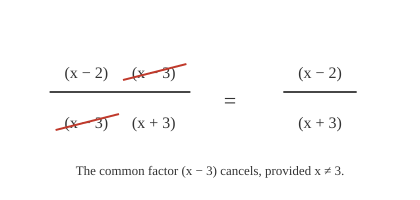

Based on Cambridge IGCSE Mathematics Core and Extended Coursebook (Karen Morrison and Nick Hamshaw), Chapter 14, printed pp.461–466 (simplifying, multiplying and dividing, adding and subtracting; Worked examples 23–27 style, Exercises 14.12–14.14). Printed pages 467–470 of the books.json range are the chapter summary and mixed practice for the whole of Chapter 14; they are not taught here as a review. Pages were read from part_045.pdf and part_046.pdf. Own wording and new numbers.
Key words: algebraic fraction
An algebraic fraction is a fraction whose numerator or denominator (or both) contains an algebraic expression. Just as with numerical fractions, you may simplify by dividing the numerator and the denominator by a common factor, multiply by multiplying numerators and denominators, divide by multiplying by the reciprocal, and add or subtract over a common denominator. Always check whether the final numerator factorises, because a further common factor may then cancel.
Book: Worked example 23(d) style, printed p.462. New numbers.
Simplify \(\dfrac{x^2-5x+6}{x^2-9}\).
Answer: \(\dfrac{x-2}{x+3}\)

Book: Worked example 24 style, printed p.464. New numbers.
Write \(\dfrac{2x}{3}\times\dfrac{9}{4x^2}\) as a single fraction in its lowest terms.
Answer: \(\dfrac{3}{2x}\)
Book: Worked examples 26–27 style, printed pp.465–466. New numbers.
Write \(\dfrac{2}{x+1}-\dfrac{1}{x-1}\) as a single fraction in its lowest terms.
Answer: \(\dfrac{x-3}{(x+1)(x-1)}\)
The fraction \(\dfrac{p^{2}}{p^{6}}\) simplifies to \(\dfrac{1}{p^{k}}\). What is the value of \(k\)?
Answer: \(4\)
After cancelling, \(\dfrac{x^{2}-4x+3}{x^{2}-7x+12}=\dfrac{x-1}{x-d}\). What is the value of \(d\)?
Answer: \(4\)
\(\dfrac{1}{x+1}+\dfrac{1}{x+2}=\dfrac{2x+n}{(x+1)(x+2)}\). What is the value of \(n\)?
Answer: \(3\)
Marks: M = method, A = accurate answer (depends on M), B = independent mark. Leave exact values exact.